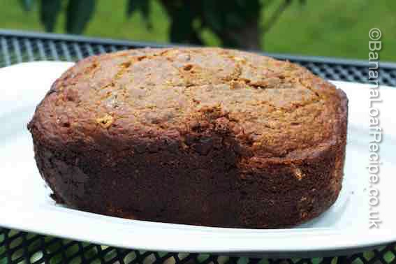

Please note, many breadmakers recommend lining your bucket when using the bake-only function. This recipe involves going against this advice. You must do this at your own risk. www.bananaloafrecipe.co.uk takes no responsibility for your choice to follow this recipe.
1. Melt the butter - either in a saucepan or in the microwave for 20 to 30 seconds depending on the microwave power.
2. Add this and all the other ingredients except the raisins to the breadmaker bucket with paddle inserted.
3. Put the bucket into the bread maker and choose a function that will immediately mix the ingredients. For some bread machines, the best function is the dough setting. If you have a pizza dough setting, this is usually even better. You need a function that does not have a rest portion but goes straight into mixing.
4. Let the bread maker mix the ingredients for approximately 3 minutes then press Stop.
5. Using a rubber or silicone spatula, scrape around the inside of the bucket and into the bottom to ensure nothing has been left out of the mixing process.
6. Set the bread machine to mix the ingredients for another 2 minutes then press Stop.
7. Scrape around the bucket with the spatular again, add the raisins and mix for another 30 seconds or so until the raisins are mixed in then press Stop.

8. The result should look like a thick batter.
9. Set your breadmaker to the Bake or Bake-Only setting. If you have a crust option, you may wish to set this to Light. Select the baking time. This will vary from machine to machine but start with 45 minutes.
10. When the machine beeps, open the machine slowly and see how your loaf is doing. Be very careful as everything in the machine is hot. The top should have risen slightly and a skewer inserted into the cake should come out clean.
11. If there is still batter on the skewer, gently close the lid and continue to bake for 5 or 10 minute increments until the loaf is done. In our breadmaker this takes 1 hr 10. Others take only 45 minutes.

12. Once you are satisfied the loaf is done, stop the machine and remove the bucket using oven gloves and place it on a heat proof surface. Allow the bucket to cool for approximately 5 minutes. As the loaf cools, it will shrink slightly and will be easier to shake out from the bucket.
13. Tip out the loaf. If the cake is stuck in the bucket, loosen it from the sides of the bucket using a non-stick spatula.
14. Cool on a wire rack (or eat warm!).
15. Slice and serve with or without butter.

16. Will keep for several days in an airtight tin.

{kind=link}
{kind=link}